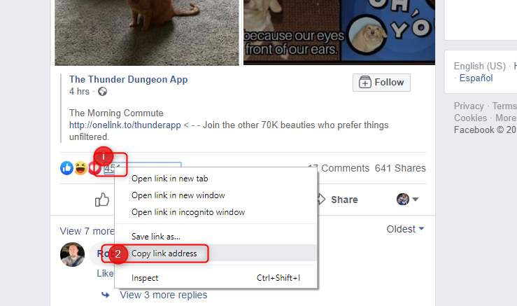

For a long time, promoting your business, website, Facebook page or anything similar was done only by growing your Facebook pages, groups or sharing your page’s posts to groups. With time, Facebook’s algorithm got more strict and these ways of promotions, although still possible to be done on a smaller scale, aren’t bringing results as they used to.
However, if there is a will there is a way. One of the latest strategies that we’re bringing to you in this post is how to promote your business, website or page with Facebook profile/s (one or more).
Important info: don’t use your real (personal) Facebook profile for this purpose since this is at least a greyhat method.
When you go through your Facebook newsfeed, you’ll notice that most posts that you see are either from your friends or actually Facebook ads and just in rare cases, you’ll see a post from a Facebook page that you liked sometimes in the past.
So the whole idea behind the this strategy is to get 5000 friends on your Facebook profile and share you posts there. This way there’s higher chance that your friends will see the posts, like it, click on it, make a purchase, or whatever you want them to do. Aside from that, the posts from friends appear a little bit more personal and trustful to Facebook users than the posts from FB Pages or advertisements.
What we’ll show you in this article is:
1. How to create bulletproof a Facebook profile – a profile that FB won’t ban or block after a couple of actions
2. How to get 5000 targeted friends by using Jarvee
3. How to scale it up
Let’s start.
Creating a bulletproof Facebook profile
After a lot of testing, we came to the conclusion that best profiles are those created with a phone number (instead of an email address). So, for a new profile, you will need a new phone number. You can use virtual ones (just make sure they work with Facebook), but it’s best to use physical sim cards (real phone numbers).
Another important thing that you have to pay attention to, is using the Facebook mobile application to create the account. The simplest way of doing this is to download Facebook Lite application (official FB app for Android or iOS) and create a new account. This way you won’t be messing with your main Facebook account and full FB application that you probably have on your phone.
After installation, click on Create New Account (Sign up) and add your new phone number. Set your password and you’re good to go. In some cases, Facebook will send you an SMS with a code (to the new phone number used for the account creation) that you’ll use to confirm your account. This will make your account more natural and FB will give it more trust.
After you’ve done the steps above, make sure you fill your profile, add your birth date, your profile photo and cover photo. A good idea is to share a couple of posts from trustful websites, maybe add some pics or post some text statuses too. All this is done in order to get your profile accepted as a friend easier by Facebook profiles that you’ll be sending your friend requests to.
All done? Good. Let’s go to next step.
How to get 5000 targeted friends by using Jarvee
You might think Facebook will never let you add 5000 friends easily and in a short period of time, but in fact, there is a way to accomplish this. If you would go from profile to profile clicking on ADD FRIEND button, you would probably get blocked pretty fast, but there is one way that Facebook does not monitor that much, and this way allows you to add a lot of friends, 1000 of them daily. Best of all, these friends will be highly targeted and interested in your niche, so when you post or share something to your Facebook wall, there’s a high chance the Facebook algo will actually show it in their newsfeed – from there, they will like it, click on it or do something else that will benefit your business, webiste or page.
Let’s say you have a website in the fashion niche and you want to promote it with your newly created Facebook profiles. First you need to add targeted FB friends. The way to accomplish this without being blocked by Facebook is to find big Facebook pages in the fashion niche, check their posts, find those posts with the most reactions (likes) and copy the reactions URL. A post reactions URL looks like this:
https://www.facebook.com/ufi/reaction/profile/browser/?ft_ent_identifier=ZmVlZGJhY2s6ODU1NTc4ODExMjc5ODQ1&av=100017003628188
To get it, follow the instructions below:
- Right click on the number of reactions (marked as 1 in screenshot below)
- Click on “Copy link address” (marked as 2 in screenshot below).

If you visit the reactions URL, you will see the list of Facebook users who reacted to that post and next to each of them, or at least most of them, there will be Add Friend button. The catch is, when you click on Add Friend button from here, Facebook doesn’t block you, even if you add 100’s of friends per day. Of course, you will still have to wait for them to accept your request. Acceptance rate in our test cases was between 20%-30%. In some cases, you will get message from Facebook to “avoid adding people you don’t know personally” or to confirm that you know the person you’re trying to add. Regarding the first message, you can ignore it and just click on Close button. In the second case, all you have to do is confirm it. This is important if you are doing it manually, but since you’ll be using Jarvee and it will do all this work for you automatically, you don’t have to worry about it.
What you need to pay attention to, is how many reactions posts have. Don’t add URL’s of reactions with posts that have only 50-100 likes, make sure there are more. Of course, make sure you find multiple URL’s, not just one, so Jarvee has sources to work with.
Let’s get to Jarvee and find out how to add these reactions URL’s to sources.
Go to your Facebook Profile’s Tools section > Search and Add Friends Tool (No 1) > Sources tab (N0 2). Check “Custom URL box” (No 3) and paste all reactions URL’s that you’ve gathered in text below (No 4 in screenshot). It should look like this:

Now your Search and Add Friends tool is almost ready to go. Let’s go back to its Settings tab to set it up.
As we said in one of the paragraphs above, Facebook doesn’t have any restrictions when adding friends this way so it’s really up to you how you will set up the tool. For safety reasons, we’ll set it up to add 500 friends per day.

In the screenshot above, you can see that we set up Jarvee to execute Search and Add friends operation every 240 – 480 seconds and send 30 – 90 friend requests to Facebook users during each operation. Maximum daily limit is set to 450 – 550 friend requests. Although we did have success with up to 1000 friend requests per day, we won’t recommend you to use so aggressive settings.
With the parameters in the screenshot, Jarvee should send about 500 requests pretty fast and your profile will be able to execute other operations during the rest of the day. In about 10 days or so, you should have a profile with a decent audience (number of friends) and you can start publishing your posts there. Keep in mind that not all people will accept your friend requests immediately and also that some of them will reject your requests.
How to scale it up?
Scaling up is pretty simple. So far we’ve talked about just one profile, so, the logical way of scaling up everything is creating multiple profiles and using Jarvee’s Search and Add Friends tool to get 5000 targeted friends on each of them. Of course, you should pay attention on the sources that you are using on each profile so you don’t end up with the same friends on all of them.
Math is simple, 10 Facebook profiles with 5000 friends each and you got yourself audience of 50 000 highly targeted Facebook users who actually care about what you are going to post.
Bonus tip: Create Facebook group (related to your niche) and start inviting all those friends from each profile to your group. Share posts from your profile to group. This should give your posts some more exposure. However, Facebook is more strict when you are inviting friends to group so you should limit these actions to 50 – 100 invites per day, and of course, spread it during the day.
If you have any suggestions or questions related to Jarvee’s Search and Add Friends tool, feel free to contact us.
Nathan says
Is there a reason to stop at 5,000? I know your service is struggling with Instagram at the moment so this is a primary reason I am trying it out. I don’t mind scaling out to more Facebook accounts but I was just wondering why stop at 5,000 friends? Can’t you take 20 Facebook accounts and get to 15,000 friends or 50,000 friends? Or is that a no no?
Bruce says
5000 is limit for 1 account. If you scroll down to the bottom fo the article, you’ll find “How to scale it up?” 🙂 and it’s exactly what you said. Of course, you need to be careful when creating accounts and make sure you get good proxies for them.
Tom Padraig says
This article got me so excited when I first read it. Well you know the part where you say don’t use your main account.. well emm … err I kinda did, and after a week of panicking if I was going to be allowed download my 10 years of images i finally got them back all 2GB of them, but its the first time facebook every totally closed an account on me. My wife thinks its so funny as I told her what you said in this article about using your main account 🙂
You do point out a great feature if I do it slower on less important accounts, I found buzzsumo good to find posts with enough interactions to be able to build a demographic. I do wonder what direction facebook is trying to go in however, its next to impossible to create new accounts and at a point in their company’s history when they are losing so many people due to privacy concerns do they really want their network to shrink.
But for now the older audience is a gold mine for agency’s customers!
Raj says
There is option to contact different users across all accounts/tags.
You can add same option for Facebook adding friend as well, so we don’t add same people in two different account. Though I’m not using facebook for marketing purpose now, because I got many blocks.
Bruce says
Thanks for suggestion, we’ll see what we can do about that. You should try promotion on FB with this method.
Randy says
Thank you for this guide. Trying to get it setup and working now for me. The only issue I am having is getting a large amount of HQ accounts. You mentioned the best quality is created through the FB app.
1. Can we use an android emulator (Memu, Nox, Bluestacks etc.) to create FB accounts through the app? Will this be the same quality as a real phone?
2. Can we buy FB accounts? Are there any good quality sellers?
3. Also I noticed inside Jarvee on an embedded browser when you right click on the interactions count it doesnt have all the options as a regular browser. There is no “Copy Link Location” Is there a way to do this inside the Jarvee embedded browser? I can do it on my normal account outside of Jarvee
4. Does the Jarvee embedded browser for Facebook still use a “Mobile Browser” or is it desktop browser?
Bruce says
1. You can try, but I’m not sure how good it will work. You won’t know until you test it. Using an app worked great in our tests.
2. You can try with bought accounts too, I can’t recommend any specific provider, but check forums like blackhatworld, should be plenty of them there.
3. You can use your personal profile with chrome, just to get the links, it won’t hurt your profile, you will be doing nothing bad.
4. For FB, it uses desktop browser.
Randy says
Ok thanks. Also I have some more questions.
1. After we create the account on mobile how long until we can add it to Jarvee and start adding friends with the method above?
2. Does there have to be some warm up period or can we just start with the settings mentioned above?
3. 240-480 seconds between operations seems fast between adding 30-90 people per operation. Should we go longer than this or is it okay since this is sort of a “loophole” where facebook doesnt block you for going fast like this?
Bruce says
1. It’s always better to do some other actions before you start adding friends (fill your profile, post something).
2. Maybe 1-2 days, but we had success without warming up. Anyway, I’d recommend warming it up. Warming up never hurts 🙂
3. It’s not a lot when you consider that you’ll add 400-500 friends per day. Anyway, if you want to play it safe, you can decrease No of friend request sent per operation.
Randy says
Oh also forgot to ask is there any difference in quality between creating accounts in the Facebook Lite app compared to the regular Facebook app?
Bruce says
Actually, no. We mentioned Lite app because most people use regular app for their real FB profiles. It’s just so you don’t have to logout, login and stuff like that.
Randy says
Is there a way to automate sharing of certain pages to your timeline?
For example lets say I want to share all posts from the page “Dogs” to my timeline.
Is there a way to automate this with Jarvee so every new page post gets automatically shared to my selected accounts timelines?
I have been looking but cant find sharing anywhere on Jarvee.
Bruce says
It can be done easily. Create Standard campaign, go to What to publish > Share post tab and add pages that you want to share from.
Clemens says
How about paying out your affiliates?
Can you reply to my request?
Adam says
Just finished replying to everyone.
Jack Williams says
Does this method still work ?
Adam says
Yes, it should
rodmarb2b says
Hi,
Thanks for your post it´s very useful.
I have a couple of questions about this method:
1. The method to create the FB account, can I create many more accounts with the same mobile or the method is only to create another one?
2. You say that we create a group and invite all friend to this group but then… do I need to add all my FB accounts as admin of the FB group to use the “auto-invite friends to your groups” function of Jarvee or the FB accounts invite to their friends to the group from DM and link to the FB group?
Best regards.
Bruce says
Hi, thanks for the comment.
1. I believe you can use same phone for 2-3 accounts, but don’t do more.
2. You can add all accounts as administrators of the group/s, just to be safe in case one of them gets suspended.
Lucas says
In the second friendship request i sent, i got photo verification block, i made the account by 4G connection in the Facebook Lite app , and routed the connection to my PC and used a clean browser and clean Windows user, which i manually sent the friendship request with the reaction link as stated on this article, i have also added a bunch of informations in the account, how can i bypass this photo verification?
Bruce says
It could be they’re paying more attention now when this method is available publicly, I can’t say for sure. Still works fine on my side.
Randy says
Yes same with me. I create an account on a phone with 4G and a phone number and after 1 friend request it gets photo verification. @Bruce Is there anything else you are doing differently to make this work?
Bruce says
It could be they become more strict now when we released this publicly, but if we didn’t, nobody would benefit from it. Hopefully, it still works for some people.
Ryder says
I had so many unsuccessful tries to create stable Facebook profiles, will try to do it using your tips! Many thanks for the amazing Jarvee team!
FBjunky says
This is far best explanation of such a powerful tool and method, thank You so much,i’ll try it right away. Great tips,thanks again!
Pawel1986 says
Hi there. is that still current in 2020?
Bruce says
Most of it, yes, but Instagram is even more strict now. Anyway, we found some solutions and implemented them in Jarvee. Just send message to support, let them know you’re getting blocks and they’ll show you what options to use in order to avoid it.
Masa says
Wow thank you for sharing these! I’m one of many happy Jarvee users that uses Jarvee on Facebook, however didn’t know about this method for getting friends on Facebook profiles. Can’t wait to try it.
Emanuel says
I was actually thinking that I should create group where I will gather people from my niche. Going to try it, hope it will be worth the effort. Thanks for the post.
Maria says
I didn’t know 90% of these steps and workarounds, I can just clap my hands and say bravo. I’ll try it step by step.
Gale says
Where was this guy 1 year ago, he forced me to try again with FB, this time hopefully with success. We need similar content more often.
Rav says
I am trying to set this up, but have run into an issue.
There is no “Copy Link Location” on the reactions on posts as you mentioned. I am using Chrome and my personal account to try as well.
Please help.
Bruce says
Hello Rav,
The article was written while FB still used the old design. Now, with the new design, the URL of the post’s reaction is not available, however, we took care of that.
All you need to do is:
1. While on FB:
– Click the right mouse button on the post’s publishing time
– Copy the URL of the post (we’ll find reactions).
Click below to see the screenshot and understand better what exactly I refer to:
Facebook Post URL copy
2. Open Jarvee and go to Tools for preferred FB account, then follow these steps:
– go to the “Search and Add friends” tool.
– Click on the Sources tab
– Check the box next to “Pages and Page post.
– Paste the URL of the post on and click on Add to list.
3. Start the tool and Jarvee will do the rest.
Rusty says
Hi
I have a few questions about this
1. Is this guide still valid and working? Any updates to it?
2. Is it possible to add country location filters to the “Search & Add Friends Tool” So like if I only wanted to send requests to users located in the United States?
3. Is this different than using the Contact>Friend Request tool? Like can I use the same fast settings on the Contact>Friend Request tool or will that not work for this fast adding trick?
Elaina M says
Please contact our Support Team for further assistance.